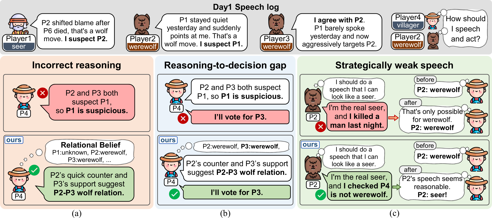
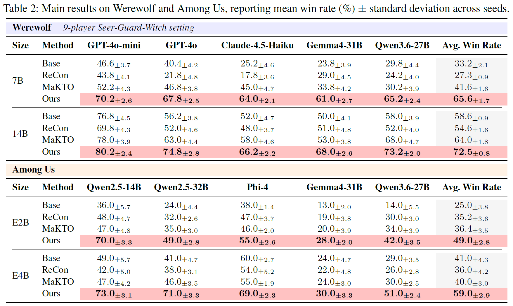
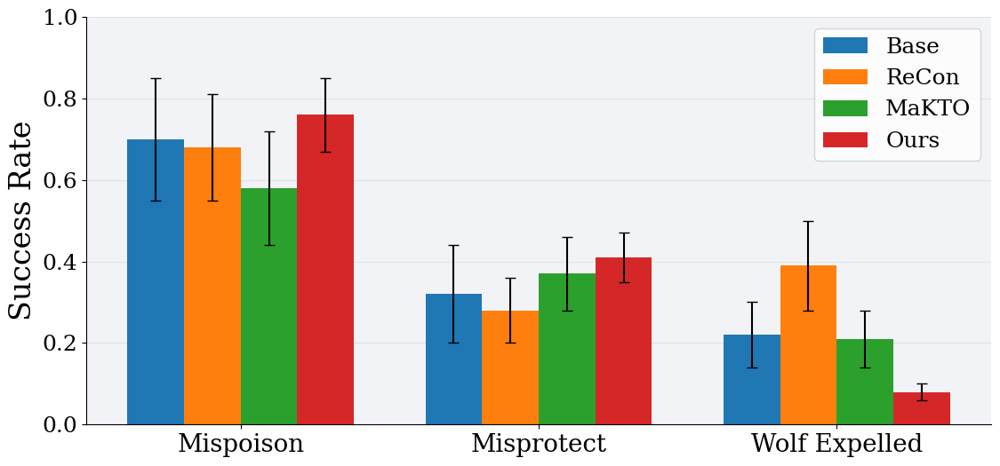
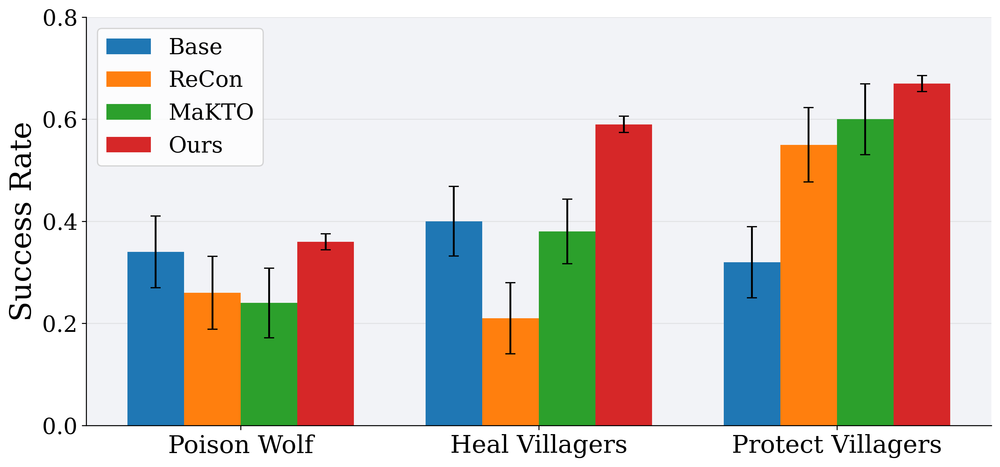

1. Relational Belief Supervision
Make decisions based on constructed relational beliefs.
Relational Belief Grounding for LLM Agents in Social Deduction Games
1Ulsan National Institute of Science and Technology (UNIST)
Conference / EMNLP 2026
Social deduction games (SDGs) require agents to reason under partial observability by maintaining relational beliefs about hidden roles and team alignments. While recent LLM-agent approaches improve gameplay through prompting and preference optimization, they often optimize actions and in-game speech without explicitly grounding them in such beliefs. This frequently leads to strategically inconsistent behavior, especially for compact LLM agents. We introduce Multi-Agent Relational Belief Optimization (MARBO), a belief-grounded preference optimization framework that leverages relational beliefs to guide strategic decisions and in-game speech. MARBO provides preference feedback only when behaviors are supported by reliable relational beliefs and lead to strategically favorable social outcomes, encouraging more consistent learning under uncertainty. Experiments on representative SDGs show that MARBO enables compact LLM agents to consistently outperform existing baselines.

TL;DR. MARBO improves the strategic consistency of compact LLM agents through belief-grounded preference optimization.
LLMs solve competition math and write working code. But those tasks share a shape: everything you need is already in the question, you answer once without hidden information. Most real situations don't look like that. You see only part of what's going on, other people know things you don't, and some of them have a reason to tell you something false. Social deduction games such as Werewolf are a clean test of exactly this. Every player holds a hidden role, everyone talks before voting, and some players are lying by design. Competent play requires acting on a belief about the other players' hidden roles, and on how those players see the table in turn, revising both as evidence accumulates. This is where otherwise strong models break down, in three distinct ways: (a) shows an agent that believes whatever it is told. A werewolf claims to be the doctor, and the agent files that away as a fact. It never asks why someone would say that (b) shows a mismatch between the agent's words and its actions. It argues that Player 3 is suspicious, then votes for Player 5. A belief is formed but never used. (c) shows that the agent acts without modeling what the other players believe, so its utterances reproduce the surface form of persuasion while carrying no inferential content.

Overview of MARBO. (a) Each agent infers relational beliefs over other players’ hidden social labels and conditions action generation on them. (b) MARBO constructs belief-grounded feedback for speech and task actions: speech feedback combines LLM speech with favorable belief shifts, while task feedback combines task actions with target-belief correctness. (c) The overall MARBO training framework.
MARBO makes belief explicit and then makes it accountable. Before acting, the agent writes a plain label for every other player, and that written belief is inserted into the prompt it acts from, so a vote is the visible consequence of a stated belief rather than a justification invented afterward. Training then scores two things: whether the written belief matches the true roles, and whether the agent's speech actually shifts other players' beliefs and its vote follows its own. Sounding persuasive earns nothing on its own. Learning from both signals at once, a 7B to 14B model keeps belief out of the hidden reasoning and requires it to carry the action.
Make decisions based on constructed relational beliefs.
Evaluate action quality using relational beliefs.
Learn a policy grounded in relational beliefs.

Main results on Werewolf and Among Us, reporting mean win rate (%) ± standard deviation across seeds
MARBO records the highest win rate in every cell of Table 2. On Werewolf it reaches 65.6% average win rate at 7B and 72.5% at 14B, against 41.6% and 64.0% for the best baseline in each setting. The 7B model surpasses all three 14B baselines in average win rate, indicating that the gain comes from belief grounding rather than parameter count. The same ordering holds on Among Us, at 49.0% for E2B and 59.0% for E4B against best baselines of 36.4% and 41.0%. Seed variance also narrows in nearly every cell, so the improvement reflects a stable change in behavior rather than a favorable draw.
| (a) Relational belief | (b) Role-wise prediction accuracy | (c) Belief-shaping success rate | ||||||||
|---|---|---|---|---|---|---|---|---|---|---|
| Model | Align acc. | Wolf F1 | Role pred. | Guard | Seer | Villager | Witch | vs GPT-4o-mini | vs GPT-4o | vs Claude-4.5 |
| Base | 40.2±4.3 | 39.8±4.1 | 37.8±4.6 | 43.2 | 43.4 | 27.2 | 37.4 | 82.2 | 33.4 | 70.6 |
| ReCon | 38.2±4.7 | 45.2±4.2 | 37.4±4.5 | 31.6 | 46.8 | 41.6 | 29.6 | 78.8 | 36.4 | 44.2 |
| MaKTO | 44.8±4.6 | 31.2±4.8 | 43.2±4.4 | 43.4 | 55.4 | 24.2 | 49.8 | 75.5 | 36.4 | 42.2 |
| MARBO | 66.0±3.2 | 56.4±2.5 | 57.2±3.5 | 52.4 | 66.4 | 52.2 | 57.8 | 88.2 | 78.4 | 87.8 |
The three blocks read the belief mechanism from both directions. (a) asks whether the agent builds a correct picture of the table at all, where MARBO reaches 66.0 alignment accuracy against 44.8 for the best baseline. (b) breaks that down by role, confirming the gain is not one easy role carrying an average: it holds across all four, including Villager, the role with no night information to reason from. (c) reverses the direction and asks whether the agent can put a belief into someone else's head. The baselines manage this only against a weak listener, shaping GPT-4o-mini near 80 but collapsing to roughly 35 against GPT-4o, while MARBO stays between 78.4 and 88.2 across all three opponents.

Werewolf-side strategic outcomes in the 9-player Seer-Guard-Witch setting, reporting mean rate ± standard deviation across seeds (higher is better for Mispoison and Misprotect, lower for Wolf Expelled)
Each metric isolates a different lever the werewolf side has to pull. Mispoison and Misprotect measure whether the agent can redirect the Witch's poison and the Guard's shield onto the wrong target, which requires tracking what those two roles currently believe and shifting it through speech, not merely concealing its own role. Wolf Expelled measures whether that deception survives the day vote, and is the direct cost of failing. MARBO leads on both manipulation metrics and cuts expulsion to 0.08 from 0.21 for the strongest baseline, so the survival gain is not bought by staying quiet: the agent is redirecting other players' actions while remaining unsuspected. Standard deviation also narrows across all three, indicating a learned policy rather than occasional favorable games.

Villager-side strategic outcomes in the 9-player Seer-Guard-Witch setting, reporting mean success rate ± standard deviation over 5 seeds (higher is better throughout).
Each metric tests whether a night action lands on the correct target, which is the point where a villager's belief becomes verifiable. Poison Wolf asks whether the Witch spends a single irreversible kill on an actual werewolf, and Heal and Protect Villagers ask whether the Witch and the Guard spend their saves on players still worth saving rather than on a wolf or a corpse. All three require the agent to hold a belief formed only from daytime speech and act on it, so a correct target cannot be reached by fluent argument alone. MARBO leads on all three, most clearly on Heal Villagers at 0.59 ± 0.02 against 0.40 ± 0.07 for the best baseline, and its standard deviation is the smallest in every group. Read alongside the werewolf-side results, this indicates the belief mechanism is role-agnostic: the same written belief that lets a wolf redirect these actions is what lets a villager aim them correctly.
We propose MARBO, a relational-belief-driven preference optimization framework for LLM agents in partially observable social deduction games. MARBO supervises agent-wise beliefs about hidden roles, team alignments, and strategic relations, then constructs belief-grounded feedback for task decisions and speech actions. This aligns behavior with inferred social relations and encourages communication that shapes others’ beliefs. Across Werewolf and Among Us, MARBO outperforms prompting-based and preference-learning baselines, demonstrating the value of optimizing hidden social reasoning in partially observable multi-agent interaction.
@article{hwang2026marbo,
title = {MARBO: Relational Belief Optimization for Multi Agent Decision Making},
author = {HwangYeChan, Sangjun Bae, Jeongmo Kim, Sangwoo Bang, Seungyul Han},
journal = {arXiv preprint},
year = {2026}
}